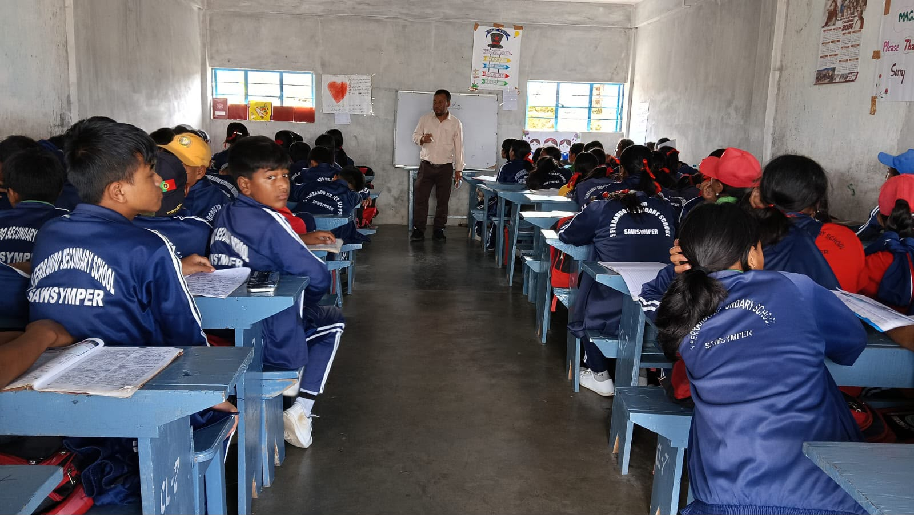

Our Mission
To provide a caring and inclusive education that develops knowledge, character, and practical skills. We encourage every student to think independently, respect others, care for the environment, and contribute to the wider community.
S. Ferrando, Samsymper Since 1971
From first discoveries to higher secondary education, we nurture curious minds, kind hearts, and the confidence to be ever better.
pin_drop Main School Portico • Samsymper
S. Ferrando Higher Secondary School, Samsymper
Established in 1971, our school serves the community of Samsymper in the South West Khasi Hills of Meghalaya. Guided by the Missionary Sisters of Mary Help of Christians (MSMHC), we bring together academic learning, character formation, and service to the community.
From the early years to higher secondary education, we encourage students to learn with curiosity, act with compassion, and take pride in their heritage. Our motto, “Ever Better” (Semper Melius), inspires us to keep growing together.
Learning with purpose. Growing with values. Serving with compassion.
To provide a caring and inclusive education that develops knowledge, character, and practical skills. We encourage every student to think independently, respect others, care for the environment, and contribute to the wider community.
To nurture confident, compassionate, and responsible young people who pursue excellence throughout life. We envision a school community rooted in faith, respect for local heritage, and a shared commitment to a more just and sustainable world.
Inspiring learning, nurturing character, and supporting every student's growth.
“Education at S. Ferrando is never mere mechanical preparation for certificates; it is the holy formation of character, moral judgment, and courageous social stewardship in the hills of Meghalaya.”
Strengthening the partnership between school, families, and our community.
A meaningful education is built on trust and cooperation. At S. Ferrando, we value the partnership between teachers, parents, and students, and the everyday care that helps each child feel supported.
Honouring our educational heritage while supporting the next generation.
The strength of a school lies in the values it lives each day. Our commitment is to support an education that balances academic achievement with integrity, compassion, and service.
A good education opens minds. A caring school helps every student find their place.
Curiosity, classroom discovery, and a steady foundation for the next stage of education.
Faith, kindness, respect, and the everyday choices that help build good character.
Students, educators, and families growing together with pride in our local heritage.
Outdoor experiences and community activities that bring lessons beyond the classroom.
From joyful first discoveries to confident preparation for higher education, explore every stage of our K-12 learning journey.
Cultivating innate curiosity through sensory exploration, Khasi & English phonetics, rhythm, storytelling, and Christian virtue. Our gentle environment eases first-time learners into collaborative social habits with dedicated mother-care teacher sisters.

Explore Science and Arts, and choose a direction that builds on your interests.
Ask questions, explore ideas, and build a foundation in the sciences and mathematics.
Understand people, society, and the stories that shape our world through the humanities.
Contact the admissions office for current subject combinations, eligibility, and availability.
No circulars found. Try another keyword or select All Circulars.
Shortlisted candidates from Class X SSLC must present attested marksheets, transfer certificates, and character certificates at the Academic Hall between 10:00 AM – 2:00 PM.
Roster for Physics, Chemistry, and Biology apparatus inspections and viva voce sessions in the Senior Science Wing.
Red, Blue, Green, and Gold house captains to assemble for athletics registration and traditional choir rehearsals.
Eco-cadets will plant 500 saplings in collaboration with local dorbar shnong elders to preserve water catchment zones.
See the learning, friendships, and shared experiences that make our school a community.
Every lesson is an opportunity to ask questions, share ideas, and discover something new.
Explore our academicsHands-on experiences help students connect with nature and care for the world around them.
See school momentsShared activities encourage responsibility, confidence, and a spirit of service.
Discover our valuesExplore a few favourite moments from our school community.
6 photos shown
Providing high-grade scholastic infrastructure tailored for physical well-being, hygienic security, and modern laboratory investigation.
Separate Physics, Chemistry, and Biology workbenches equipped for individual student practicals, micro-slides, and chemical reagents.
Pure natural mountain spring water gravity-fed and treated with multi-stage UV filtration units for clean, unlimited drinking across wings.
Safe designated student transport covering key village pickup points across South West Khasi Hills with senior teacher escorts.
Over 8,000 volumes encompassing reference encyclopedias, NCERT resources, Khasi folk anthologies, and subscribed science periodicals.
On-campus infirmary managed with trained sister-nurses, medical emergency stocks, oxygen provision, and tie-up with local health center.
Expansive open-air playground for football tournaments, athletics track and field events, volleyball court, and morning drills.
Structured, merit-guided admission workflow engineered to induct prospective candidates into Nursery, Primary, Secondary, or Class XI Science & Arts.
Collect application prospectus from the school office or register via online callback dispatch. Birth certificate and marksheets required.
Personalized stream counseling with senior mentors for Class XI candidates to choose between Science (PCM/PCB) and Arts (Humanities).
Verification of Transfer Certificate (TC), Conduct Certificate, and ST/SC/OBC Scholarship credentials with school registrar.
Fee settlement, official uniform kit issuance (navy blazer & house badge), student diary, and induction into Ferrandian family.
Ask the school office for current subjects, fees, and admission guidance.
A little less searching. A little more time for what matters.
Understand the steps from your first enquiry to joining our school.
View the processFind circulars, academic updates, and information from the school office.
Browse noticesFind answers about admissions, daily routines, and student support.
Read the FAQsAsk about subject choices, fees, or the next step for your child.
Make an enquiryClear answers regarding boarding, academic eligibility, fee concessions, and school routine.
Share a few details to prepare an enquiry email for our admissions office.
Meet our community, ask your questions, and discover what learning at S. Ferrando could look like for your child.
Explore our location on the map and get in touch with the school office to plan your visit. We look forward to welcoming you to our community.
Samsymper, South West Khasi Hills District,
Meghalaya – 793114, India
Office Hours
Mon–Fri: 8:45 AM – 3:30 PM